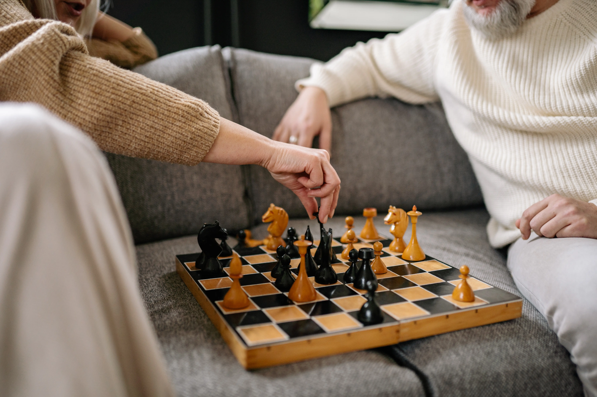

What should I bring?
When preparing to move an elderly loved one into a group home, it's important to ensure they have everything they need to feel comfortable and secure. Click to see a comprehensive checklist of items to bring to Bloom Haven, including personal care items, clothing, and important documents. With our guide, you can help your loved one transition smoothly into their new home.
Welcome to Bloom Haven!
Bloom Haven strives to treat our residents, families, and staff with dignity and respect in a home focused on elderly care and compassion to those with specialized needs. We are closely run by a registered nurse with more than a decade's experience in direct patient care.
Bloom Haven offers a range of activities to enhance the quality of life for our residents. These include art activities, daily exercise, shared meal prep, seasonal activities, and holiday and birthday celebrations.
How Are We Different Than Other Group Homes?
- We keep daily records for fluid & food consumption for family and health care providers, as well as records of brief changes.
- Skin inspections are performed weekly; if wound care is necessary, it will be signed off on by staff as ordered.
- Non-mobile residents will be repositioned off weight- bearing areas every 2 hours around the clock.
- Changing dietary needs provided for. Such as texture changes, supplements, and even comfort feeding at end of life.
Click here for a longer list on the services we offer!
When advanced daily care is needed due to a loved one's inability to care for themselves, specific care is needed and must be tailored for each person. At Bloom Haven, we go above and beyond to ensure the well-being of our elderly residents.
Owned and Operated by a Registered Nurse
Bloom Haven provides a weekly menu with a range of breakfast, lunch, and dinner options. Our menus change regularly and are subject to change based on availability and dietary needs. We offer a variety of choices such as hot cereal, pancakes, eggs, yogurt with granola, grilled cheese sandwich, chicken noodle soup, beef chili, salmon and spinach salad, and more. Fluids served with meals include water, milk, juice, coffee, or tea. Our goal is to ensure our residents receive nutritious and delicious meals every day.